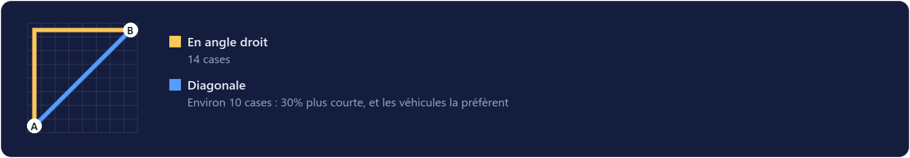

Routes et voies
Tracer des lignes, pentes, croisements et diagonales.
Glisse avec Route (2) ou Voie (3) pour construire. La note à côté de la souris montre le prix, ou la raison pour laquelle c'est impossible.
- Les embranchements se forment là où les lignes se rencontrent.
- Les deux montent une pente de face, mais ne la traversent jamais de côté. Aplanis d'abord le terrain irrégulier.
- La route et le rail se croisent à un passage à niveau si les deux sont droits et le terrain plat.
- Les villes construisent leurs propres rues. Tes bus et camions peuvent les emprunter.
- Une voie appartient à qui l'a construite : tu ne peux ni construire sur celle d'un rival ni la retirer.
Diagonales
- Glisse à environ 45 degrés pour tracer une diagonale.
- Une diagonale est environ 30% plus courte que le détour par l'angle, et les véhicules la préfèrent.
- Deux diagonales peuvent partager une case sur terrain plat : la double voie fonctionne donc.
- Les signaux fonctionnent sur les diagonales. Les stations doivent être droites.


Relier deux endroits
- Choisis Relier par la route dans Routes ou Relier par le rail dans Rail et clique là où la ligne commence. Montre où elle doit aller : la meilleure ligne entre les deux s'affiche aussitôt, diagonales comprises, avec son prix dans la note à côté de la souris.
- Clique pour la construire. Un Maj+clic fixe plutôt la ligne jusqu'à ce point et repart de là, pour la guider autour d'une ville ou sur le terrain de ton choix. Esc ou un clic droit abandonnent le départ.
- Commence ou termine sur ta propre route, voie ou station et la nouvelle ligne s'y raccorde. Elle ne passe jamais sur la voie d'un rival.
- Là où le chemin passe sur l'eau ou à travers une colline trop raide, elle construit un pont, dans le style le moins cher assez long, ou un tunnel - sauf si un petit détour coûte moins. La note les indique avec le prix. Des extrémités à plus de 160 cases l'une de l'autre sont trop loin pour une seule ligne : ajoute des points de passage.
- Un seul Ctrl+Z annule toute la ligne.
La route coûte 260 $ par case et la voie 420 $. Tous les prix sont dans Coûts de construction.